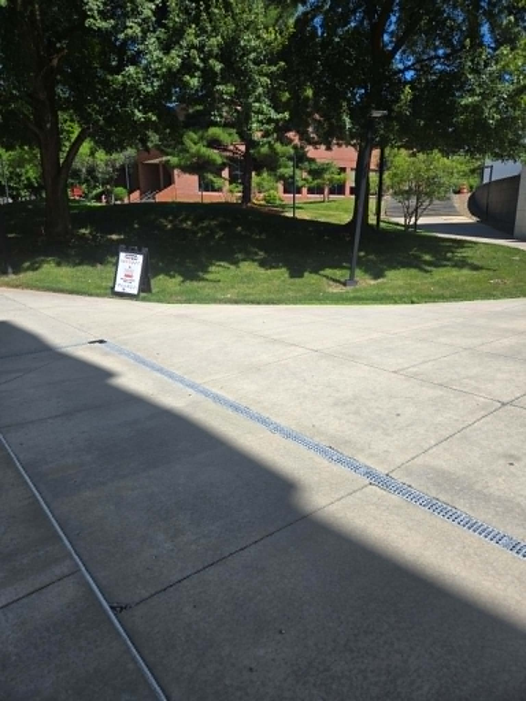

The Memorial Bench
The bench sits on the campus of Youngstown State University in Youngstown, Ohio, the place Brandy was studying psychology and sociology, and the place we have gathered to remember her since 2013.
Finding the bench (temporary location): Due to construction at Kilcawley Center, Brandy's memorial bench has been temporarily moved. You'll currently find it on the lawn between Maag Library and the Butler Institute of American Art on the YSU campus.
